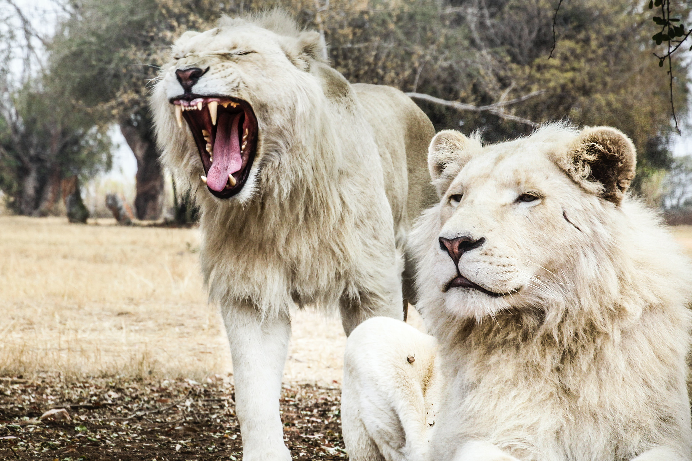

Puntos clave:
Las adaptaciones son todas aquellas características que le permiten a un ser vivo sobrevivir en su hábitat.
Hay dos clases de adaptaciones:
Adaptaciones físicas: Son aquellos cambios en las estructuras externas o internas de los organismos.
Adaptaciones de comportamiento: Son los cambios relacionados con el comportamiento de los organismos.
¿Qué son las adaptaciones?
Las adaptaciones son todas las características que le permiten a un organismo sobrevivir y aprovechar los recursos de su hábitat.
Por ejemplo, los animales del polo norte tienen que desarrollar métodos para poder resistir al frío, mientras que las plantas del desierto tienen mecanismos para poder utilizar la menor cantidad de agua posible debido al clima seco.
Es por esta razón que todos los organismos son diferentes; han evolucionado para desarrollar distintas características, adecuándose a las condiciones de sus hábitats.
Adaptaciones Físicas
Las adaptaciones físicas son los cambios en la estructura externa e interna de los organismos. Por lo tanto, pueden ser las características del cuerpo, como orejas largas, o las habilidades, como la capacidad de hibernar.
Por ejemplo:
üêæ Los leopardos de las nieves tienen patas grandes y una cola larga para mantener el balance y poder trepar en las monta√±as.
Adaptaciones Conductuales
Las adaptaciones conductuales son los cambios relacionados con el comportamiento de los animales. Por lo tanto, se refiere a todas las distintas características de la conducta de los animales, como la manera en la que pueden huir o atacar al sentir peligro.
Por ejemplo:
üêæ Los leones se agrupan en manadas para cazar más efectivamente y protegerse entre ellos.

Escrito por: Flavia Ballesteros (29/05/2020)